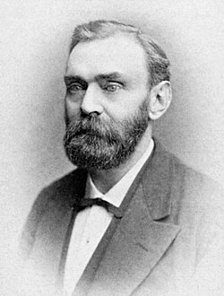
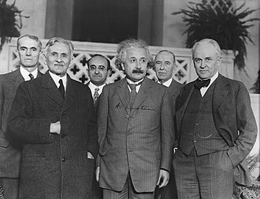
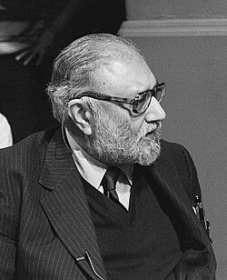
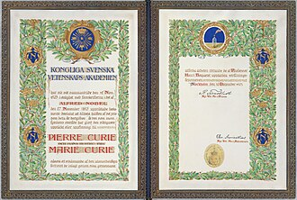

| Nobel Prize in Physics | |
|---|---|
 | |
| Awarded for | Outstanding contributions to mankind in the field of physics |
| Location | Stockholm, Sweden |
| Presented by | Royal Swedish Academy of Sciences |
| Reward | 11 million Swedish kronor (2023)[1] |
| First award | 1901 |
| Most recent recipients | John Clarke, Michel H. Devoret, and John M. Martinis |
| Most awards | John Bardeen (2) |
| Website | nobelprize.org/physics |
The Nobel Prize in Physics[a] is an annual award given by the Royal Swedish Academy of Sciences for those who have made the most outstanding contributions to mankind in the field of physics. It is one of the five Nobel Prizes established by the will of Alfred Nobel in 1895 and awarded since 1901, the others being the Nobel Prize in Chemistry, Nobel Prize in Literature, Nobel Peace Prize, and Nobel Prize in Physiology or Medicine.
The prize consists of a medal along with a diploma and a certificate for the monetary award. The front side of the medal displays the same profile of Alfred Nobel depicted on the medals for Physics, Chemistry, and Literature.
The first Nobel Prize in Physics was awarded to German physicist Wilhelm Röntgen in recognition of the extraordinary services he rendered by the discovery of X-rays.[2] This award is administered by the Nobel Foundation and is widely regarded as the most prestigious award that a scientist can receive in physics.[3] It is presented in Stockholm at an annual ceremony on 10 December, the anniversary of Nobel's death. As of 2025, a total of 229 people have been awarded the prize.[4]
Background
{kind=link}

Alfred Nobel, in his last will and testament, stated that his wealth should be used to create a series of prizes for those who confer the "greatest benefit on mankind" in the fields of physics, chemistry, peace, physiology or medicine, and literature.[5] Though Nobel wrote several wills during his lifetime, the last one was written a year before he died and was signed at the Swedish-Norwegian Club in Paris on 27 November 1895.[6][7] Nobel bequeathed 94% of his total assets, 31 million Swedish kronor, to establish and endow the five Nobel Prizes.[8] Owing to the level of skepticism surrounding the will, it was not until 26 April 1897 that it was approved by the Storting (Norwegian Parliament).[9][10] The executors of his will were Ragnar Sohlman and Rudolf Lilljequist, who formed the Nobel Foundation to take care of Nobel's fortune and organise the prizes.
The members of the Norwegian Nobel Committee who were to award the Peace Prize were appointed soon after the will was approved. The other prize-awarding organisations followed: Karolinska Institutet on 7 June, the Swedish Academy on 9 June, and the Royal Swedish Academy of Sciences on 11 June.[11][12] The Nobel Foundation then established guidelines for awarding the prizes. In 1900, the Nobel Foundation's newly created statutes were promulgated by King Oscar II.[10][13] According to Nobel's will, the Royal Swedish Academy of Sciences would award the Prize in Physics.[13]
Nomination and selection
,_Physicist_-_Restoration1.jpg){kind=link}

A maximum of three Nobel laureates and two different works may be selected for the Nobel Prize in Physics.[14] Compared with other Nobel Prizes, the nomination and selection process for the prize in physics is long and rigorous. This is a key reason why it has grown in importance over the years to become the most important prize in Physics.[15]
The Nobel laureates are selected by the Nobel Committee for Physics, a Nobel Committee that consists of five members elected by The Royal Swedish Academy of Sciences. During the first stage which begins in September, a group of about 3,000 selected university professors, Nobel Laureates in Physics and Chemistry, and others are sent confidential nomination forms. The completed forms must arrive at the Nobel Committee by 31 January of the following year. The nominees are scrutinized and discussed by experts and are narrowed to approximately fifteen names. The committee submits a report with recommendations on the final candidates to the Academy, where, in the Physics Class, it is further discussed. The Academy then makes the final selection of the Laureates in Physics by a majority vote.[16]
{kind=link}

The names of the nominees are never publicly announced, and neither are they told that they have been considered for the Prize. Nomination records are sealed for fifty years.[17] While posthumous nominations are not permitted, awards can be made if the individual died in the months between the decision of the committee (typically in October) and the ceremony in December. Prior to 1974, posthumous awards were permitted if the candidate had died after being nominated.[18]
The rules for the Nobel Prize in Physics require that the significance of achievements being recognized has been "tested by time". In practice, that means that the lag between the discovery and the award is typically on the order of 20 years and can be much longer. For example, half of the 1983 Nobel Prize in Physics was awarded to Subrahmanyan Chandrasekhar for his work on stellar structure and evolution that was done during the 1930s. As a downside of this tested-by-time rule, not all scientists live long enough for their work to be recognized. Some important scientific discoveries are never considered for a prize, as the discoverers have died by the time the impact of their work is appreciated.[19][20]
Prizes
A Physics Nobel Prize laureate is awarded a gold medal, a diploma bearing a citation, and a sum of money.[21]
Medals
The medal for the Nobel Prize in Physics is identical in design to the Nobel Prize in Chemistry medal.[22][23] The reverse of the physics and chemistry medals depicts the Goddess of Nature in the form of Isis as she emerges from clouds holding a cornucopia. The Genius of Science holds the veil which covers Nature's "cold and austere face".[23] It was designed by Erik Lindberg and is manufactured by Svenska Medalj in Eskilstuna.[23] It is inscribed "Inventas vitam iuvat excoluisse per artes" ("It is beneficial to have improved (human) life through discovered arts"), an adaptation of "inventas aut qui vitam excoluere per artes" from line 663 of book 6 of the Aeneid by the Roman poet Virgil.[24] A plate below the figures is inscribed with the name of the recipient. The text "REG. ACAD. SCIENT. SUEC." denoting the Royal Swedish Academy of Sciences is inscribed on the reverse.[23]
Diplomas
{kind=link}

Nobel laureates receive a diploma directly from the hands of the King of Sweden. Each diploma is uniquely designed by the prize-awarding institutions for the laureate who receives it.[25] The diploma contains a picture with the name of the laureate and a citation explaining their accomplishments.[25]
Award money
At the awards ceremony, the laureate is given a document indicating the award sum. The amount of the cash award may differ from year to year, based on the funding available from the Nobel Foundation. For example, in 2009 the total cash awarded was 10 million Swedish Kronor (SEK) (US$1.4 million),[26] but in 2012 following the Great Recession, the amount was 8 million SEK, or US$1.1 million.[27] If there are two laureates in a particular category, the award grant is divided equally between the recipients, but if there are three, the awarding committee may opt to divide the grant equally, or award half to one recipient and a quarter to each of the two others.[28][29][30][31]
Ceremony
The committee and institution serving as the selection board for the prize typically announce the names of the laureates during the first week of October. The prize is then awarded at formal ceremonies held annually in Stockholm Concert Hall on 10 December, the anniversary of Nobel's death. The laureates receive a diploma, a medal, and a document confirming the prize amount.[32]
Controversies
See also
- List of Nobel laureates in Physics
- List of physics awards
- Breakthrough Prize in Fundamental Physics – International science award since 2012
- Sakurai Prize – Presented by the American Physical Society
- Wolf Prize in Physics – One of six awards of the Wolf Foundation
Notes
References
Citations
- ^ "The Nobel Prize amounts". The Nobel Prize. Archived from the original on 20 July 2018. Retrieved 29 September 2023.
- ^ "All Nobel Prizes in Physics - NobelPrize.org". NobelPrize.org. Retrieved 1 October 2025.
- ^ Baruch A. Shalev (2003). 100 Years of Nobel Prizes. Atlantic Publishers & Dist. p. 8. ISBN 978-81-269-0278-1.
- ^ "All Nobel Prizes in Physics". The Nobel Foundation. Archived from the original on 25 July 2018. Retrieved 3 October 2023.
- ^ "History – Historic Figures: Alfred Nobel (1833–1896)". BBC. Archived from the original on 27 December 2019. Retrieved 3 May 2015.
- ^ Ragnar Sohlman: 1983, Page 7
- ^ von Euler, U.S. (6 June 1981). "The Nobel Foundation and its Role for Modern Day Science". Die Naturwissenschaften. 68 (6). Springer-Verlag: 277–281. Bibcode:1981NW.....68..277V. doi:10.1007/BF01047469.
- ^ "Nobel's will". Nobel.org. Archived from the original on 15 August 2018. Retrieved 4 May 2015.
- ^ "The Nobel Foundation – History". Nobelprize.org. Archived from the original on 9 January 2010. Retrieved 3 May 2015.
- ^ a b Agneta Wallin Levinovitz: 2001, Page 13
- ^ "Nobel Prize History –". Infoplease.com. 13 October 1999. Archived from the original on 26 April 2013. Retrieved 3 May 2015.
- ^ Encyclopædia Britannica. "Nobel Foundation (Scandinavian organisation) – Britannica Online Encyclopedia". Britannica.com. Archived from the original on 14 May 2013. Retrieved 3 May 2015.
- ^ a b "Nobel Prize Archived 29 April 2015 at the Wayback Machine" (2007), in Encyclopædia Britannica, accessed 15 January 2009, from Encyclopædia Britannica Online:
After Nobel's death, the Nobel Foundation was set up to carry out the provisions of his will and to administer his funds. In his will, he had stipulated that four different institutions—three Swedish and one Norwegian—should award the prizes. From Stockholm, the Royal Swedish Academy of Sciences confers the prizes for physics, chemistry, and economics, the Karolinska Institute confers the prize for physiology or medicine, and the Swedish Academy confers the prize for literature. The Norwegian Nobel Committee based in Oslo confers the prize for peace. The Nobel Foundation is the legal owner and functional administrator of the funds and serves as the joint administrative body of the prize-awarding institutions, but it is not concerned with the prize deliberations or decisions, which rest exclusively with the four institutions.
- ^ Nobelprize.org. "Facts and figures". Archived from the original on 15 August 2018. Retrieved 4 May 2015.
- ^ "The Nobel Prize Selection Process". Britannica Encyclopaedia. Archived from the original on 29 April 2015. Retrieved 4 May 2015.
- ^ "Nomination and Selection of Physics Laureates". nobelprize.org. Nobel Media AB 2016. Archived from the original on 20 May 2020. Retrieved 6 October 2016.
- ^ "50 year secrecy rule". Archived from the original on 1 May 2015. Retrieved 6 May 2015.
- ^ "About posthumous awards". Archived from the original on 24 July 2018. Retrieved 4 May 2015.
- ^ Gingras, Yves; Wallace, Matthew L. (2009). "Why it has become more difficult to predict Nobel Prize winners: A bibliometric analysis of nominees and winners of the chemistry and physics prizes (1901–2007)". Scientometrics. 82 (2): 401. arXiv:0808.2517. doi:10.1007/s11192-009-0035-9. S2CID 23293903.
- ^ "A noble prize". Nature Chemistry. 1 (7): 509. 2009. Bibcode:2009NatCh...1..509.. doi:10.1038/nchem.372. PMID 21378920.
- ^ Rivers, Tom (10 December 2009). "2009 Nobel Laureates Receive Their Honors | Europe". .voanews.com. Archived from the original on 4 October 2012. Retrieved 3 May 2015.
- ^ "A unique gold medal". Nobel Foundation. Archived from the original on 11 April 2017. Retrieved 20 June 2023.
- ^ a b c d "The Nobel Prize medals in physics and chemistry". Nobel Foundation. Archived from the original on 31 March 2023. Retrieved 20 June 2023.
- ^ "The Nobel Prize medal in physiology or medicine". Nobel Foundation. Archived from the original on 16 April 2023. Retrieved 20 June 2023.
- ^ a b "The Nobel Prize Diplomas". Nobelprize.org. Archived from the original on 13 April 2015. Retrieved 3 May 2015.
- ^ "The Nobel Prize Amounts". Nobelprize.org. Archived from the original on 20 July 2018. Retrieved 24 August 2014.
- ^ "Nobel prize amounts to be cut 20% in 2012". CNN. 11 June 2012. Archived from the original on 9 July 2012.
- ^ Sample, Ian (5 October 2009). "Nobel prize for medicine shared by scientists for work on ageing and cancer | Science | guardian.co.uk". Guardian. London. Archived from the original on 13 January 2020. Retrieved 15 January 2010.
- ^ Sample, Ian (7 October 2008). "Three share Nobel prize for physics | Science | guardian.co.uk". Guardian. London, England. Archived from the original on 1 June 2019. Retrieved 10 February 2010.
- ^ Landes, David. "Americans claim Nobel economics prize – The Local". Thelocal.se. Archived from the original on 20 November 2012. Retrieved 15 January 2010.
- ^ "The 2009 Nobel Prize in Physics – Press Release". Nobelprize.org. 6 October 2009. Archived from the original on 19 January 2013. Retrieved 10 February 2010.
- ^ "Nobel prize award ceremony". Archived from the original on 24 April 2015. Retrieved 4 May 2015.
Sources
- Friedman, Robert Marc (2001). The Politics of Excellence: Behind the Nobel Prize in Science. New York & Stuttgart: VHPS (Times Books). ISBN 0-7167-3103-7, ISBN 978-0-7167-3103-0.
- Hillebrand, Claus D. (2002). "Nobel century: A biographical analysis of physics laureates". Interdisciplinary Science Reviews. 27 (2): 87–93. Bibcode:2002ISRv...27...87H. doi:10.1179/030801802225003150.
- Schmidhuber, Juergen (2010). "Evolution of National Nobel Prize Shares in the 20th Century". arXiv:1009.2634 [physics.hist-ph].
- National Physics Nobel Prize shares 1901–2009 by citizenship at the time of the award. Archived 17 June 2014 at the Wayback Machine and by country of birth Archived 17 June 2014 at the Wayback Machine.
- Lemmel, Birgitta. "The Nobel Prize Medals and the Medal for the Prize in Economics". Archived 15 August 2018 at the Wayback Machine. nobelprize.org. Copyright © The Nobel Foundation 2006. (An article on the history of the design of the medals.)
External links
- "All Nobel Laureates in Physics" at the Nobel Foundation.
- "The Nobel Prize Award Ceremonies and Banquets" at the Nobel Foundation.
- "The Nobel Prize in Physics" at the Nobel Foundation.